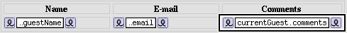

PATH
Documentation
>
WebObjects 4.5
>
Getting Started With WebObjects
Binding the Dynamic Elements in the Table
Make a connection from
currentGuest.guestName
in the object browser to the center of the WOString in the first column to bind its
value
attribute.
Similarly, bind
currentGuest.email
and
currentGuest.comments
to the WOStrings in the second and third columns.
The table should now look like this:

Save the Main component.
© 1999 Apple Computer, Inc. – (Last Updated 24 Aug 99)